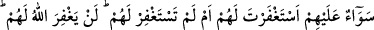

onlara üstün geldiği, kuşkulanma duyguları kendilerini kapladığı, enaniyetle
perdelendikleri için bir iyilik yapıyormuş gibi söyleyenden veya mağfiret talebinden
yüz çevirirler, demektir. Bunun sabebi de, alçaklık yönüne ve dünyanın süslerine
çekildiklerindendir. Bu sebeple de onların tabiatlarında yüceliklerden ve âhirete âid
mânâlardan yana hiçbir yöneliş yoktur.
Kâşifî şöyle demiştir: Hz. Peygamber (s.a.)’in meclisine gitmekten yüz çevirirler.
Mesnevî’de şöyle gelmiştir:
Göklerin sûretâ yüksekliği var
Mânâ bakımından yükseklik, temiz rûhundur.
Sûretâ yücelik cisimlerindir
Ancak mânâ huzurunda cisimler, isimlerden ibârettir.
Bir hadis-i şerifte Peygamberimiz (s.a.) şöyle buyurmuştur: “Kendi görüşünü
beğenen ve inadçı bir adam gördüğünde bil ki onun zarar ve ziyanı son dereceye
ulaşmıştır.”
6. Onlara mağfiret dilesen de, dilemesen de birdir. Allah onları kesinlikle
bağışlamayacaktır. Çünkü Allah, yoldan çıkmış topluluğu doğru yola iletmez.
“Onlara mağfiret dilesen de, dilemesen de birdir.” İşlemiş oldukları cinâyetlerden
dolayı özür dilemek üzere gelseler de durum değişmez. Keşfü’l-Esrar’da şöyle
kaydedilmiştir: Rasûlullah (s.a.) îmân etmeleri için onları muvaffak etmesi ve
günahlarından dolayı yarlığamasını Allah’tan dilemiştir.
Şöyle de denilmiştir: “Onlar için yetmiş kez af dilesen de Allah onları asla af
etmeyecektir” (et-Tevbe, 9/80) âyet-i kerîmesi inince Peygamberimiz (s.a.): “O halde
ben onlar için elbette yetmiş kezden fazla mağfiret dilerim” buyurdu.[144] Bunun
üzerine de Cenab-ı Hak: “Onlara mağfiret dilesen de dilemesen de birdir” âyet-i
kerîmesini indirdi. Münâfıklar kötülük işlemekte ısrar ettikleri, özür ve mağfiret
dilemekten büyüklendikleri, büyük günahlara devam ettikleri, inkârın en büyüğünü
işledikleri ve insan yaratılışına uygun dosdoğru olan dinden çıktıkları için “Allah
onları kesinlikle” ebediyyen “bağışlamayacaktır.” “Çünkü Allah yoldan çıkmış” son
derece günahkar, iyileşme ve düzelmeyi isteme sınırından çıkmış, inkâr ve iki yüzlülüğe
dalmış veya haktan yana olanların dâiresinden çıkmış, bozuk ahlâklıların ve
bozguncuların arasına girmiş olan “topluluğu doğru yola iletmez.”
Âyet-i kerîme’de, münâfıkların bulanık yaratılışlarının kabalığı ve karanlık huylarının